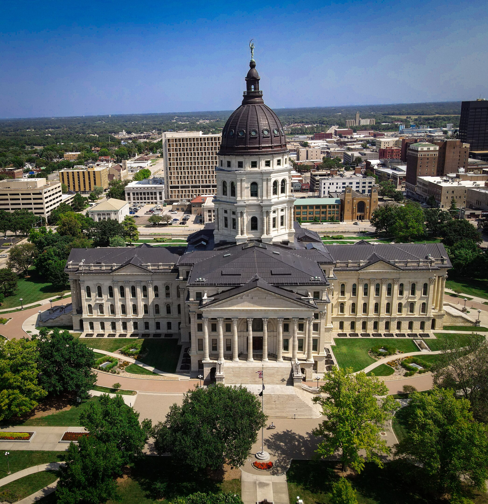

Photo: By Srudisell - Own work, CC BY-SA 4.0, Link
Topeka is the capitol of Kansas, incorporated in 1857. It is situated along the Kansas River in the eastern part of the state. Source: Topeka Wikipedia page
The population of Topeka is 126,587 according to the US Census. Source
The median household income is $55,902 according to the US Census. Source This is $16,737 less than the Kansas median, which is $72,639 according to the US Census. Source: US Census